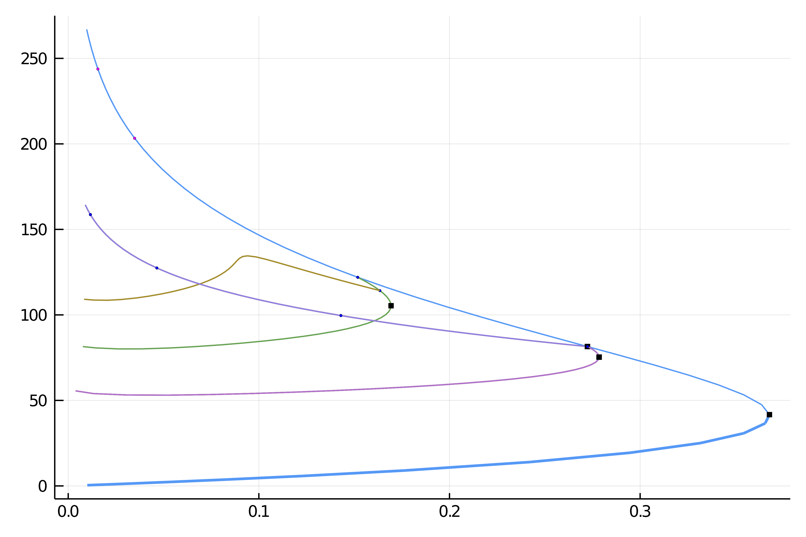

2d Bratu–Gelfand problem with Gridap.jl (Intermediate)
We re-consider the problem of Mittelmann treated in the previous tutorial but using a finite elements method (FEM) implemented in the package Gridap.jl.
Recall that the problem is defined by solving
with Neumann boundary condition on $\Omega = (0,1)^2$ and where $NL(\lambda,u)\equiv-10(u-\lambda e^u)$.
We start by installing the package GridapBifurcationKit.jl. Then, we can import the different packages:
using Revise
using Plots, Gridap,Setfield
using Gridap.FESpaces
using GridapBifurcationKit, BifurcationKit
# custom plot function to deal with Gridap
plotgridap!(x; k...) = (n=Int(sqrt(length(x)));heatmap!(reshape(x,n,n); color=:viridis, k...))
plotgridap(x; k...) =( plot();plotgridap!(x; k...))We are now ready to specify the problem using the setting of Gridap.jl: it allows to write the equations very closely to the mathematical formulation:
@law NL(u) = exp(u)
# residual
res(u,p,v) = -∇(v)⋅∇(u) - v ⋅ (u - p.λ * NL(u)) * 10
# jacobian of the residual
jac(u,p,du,v) = -∇(v)⋅∇(du) - v ⋅ du ⋅ (1 - p.λ * NL(u)) * 10
# 3rd and 4th derivatives, used for aBS
d2res(u,p,du1,du2,v) = v ⋅ du1 ⋅ du2 ⋅ NL(u) * 10 * p.λ
d3res(u,p,du1,du2,du3,v) = v ⋅ du1 ⋅ du2 ⋅ du3 ⋅ NL(u) * 10 * p.λ
# discretisation
n = 40
domain = (0,1,0,1)
cells = (n,n)
model = CartesianDiscreteModel(domain,cells)
# function spaces
order = 1
V = TestFESpace(
model=model,reffe=:Lagrangian,valuetype=Float64,
order=order,conformity=:H1,)#dirichlet_tags="boundary")
U = TrialFESpace(V)
trian = Triangulation(model)
degree = 2*order
quad = CellQuadrature(trian,degree)
# example of initial guess
uh = zero(U)
# model parameter
par_bratu = (λ = 0.01,)
# problem definition
prob = GridapProblem(res, jac, d2res, d3res, trian, quad, V, U)We can call then the newton solver:
optn = NewtonPar(eigsolver = EigArpack())
sol, = newton(prob, uh, par_bratu, NewtonPar(optn; verbose = true))which gives
Newton Iterations
Iterations Func-count f(x) Linear-Iterations
0 1 2.4687e-03 0
1 2 1.2637e-07 1
2 3 3.3579e-16 1In the same vein, we can continue this solution as function of $\lambda$:
opts = ContinuationPar(pMax = 40., pMin = 0.01, ds = 0.01,
maxSteps = 1000, detectBifurcation = 3, newtonOptions = optn, nev = 20)
br, = continuation(prob, uh, par_bratu, (@lens _.λ), opts;
plot = true, verbosity = 2,
plotSolution = (x, p; k...) -> plotgridap!(x; k...))We obtain:
julia> br
Branch number of points: 53
Branch of Equilibrium
Bifurcation points:
(ind_ev = index of the bifurcating eigenvalue e.g. `br.eig[idx].eigenvals[ind_ev]`)
- # 1, bp at p ≈ +0.36782970 ∈ (+0.36782970, +0.36787920), |δp|=5e-05, [converged], δ = ( 1, 0), step = 12, eigenelements in eig[ 13], ind_ev = 1
- # 2, nd at p ≈ +0.27168226 ∈ (+0.27168226, +0.27286757), |δp|=1e-03, [converged], δ = ( 2, 0), step = 19, eigenelements in eig[ 20], ind_ev = 3
- # 3, bp at p ≈ +0.15186464 ∈ (+0.15186464, +0.15187849), |δp|=1e-05, [converged], δ = ( 1, 0), step = 26, eigenelements in eig[ 27], ind_ev = 4
- # 4, nd at p ≈ +0.03484879 ∈ (+0.03484879, +0.03491029), |δp|=6e-05, [converged], δ = ( 2, 0), step = 41, eigenelements in eig[ 42], ind_ev = 6
- # 5, nd at p ≈ +0.01556655 ∈ (+0.01556655, +0.01559518), |δp|=3e-05, [converged], δ = ( 2, 0), step = 48, eigenelements in eig[ 49], ind_ev = 8
Fold points:
- # 1, fold at p ≈ 0.36782970 ∈ (0.36782970, 0.36782970), |δp|=-1e+00, [ guess], δ = ( 0, 0), step = 13, eigenelements in eig[ 13], ind_ev = 0

Computation of the first branches
Let us now compute the first branches from the bifurcation points. We start with the one with 1d kernel:
br1, = continuation(prob, br, 3,
setproperties(opts;ds = 0.001, dsmax = 0.05, maxSteps = 140, detectBifurcation = 3);
verbosity = 0, plot = true, nev = 10,
tangentAlgo = BorderedPred(),
usedeflation = true,
plotSolution = (x, p; k...) -> plotgridap!(x; k...))We also compute the branch from the first bifurcation point on this branch br1:
br2, = continuation(prob, br1, 1,
setproperties(opts;ds = 0.005, dsmax = 0.05, maxSteps = 140, detectBifurcation = 0);
verbosity = 0, plot = true, nev = 10,
tangentAlgo = BorderedPred(),
usedeflation = true,
plotSolution = (x, p; k...) -> plotgridap!(x; k...))
plot(br, br1, br2)We get:

Finally, we compute the branches from the 2d bifurcation point:
br3, = continuation(prob, br, 2,
setproperties(opts;ds = 0.005, dsmax = 0.05, maxSteps = 140, detectBifurcation = 3);
verbosity = 0, plot = true, nev = 10,
usedeflation = true,
plotSolution = (x, p; k...) -> plotgridap!(x; k...))
plot(br, br1, br2, br3...)